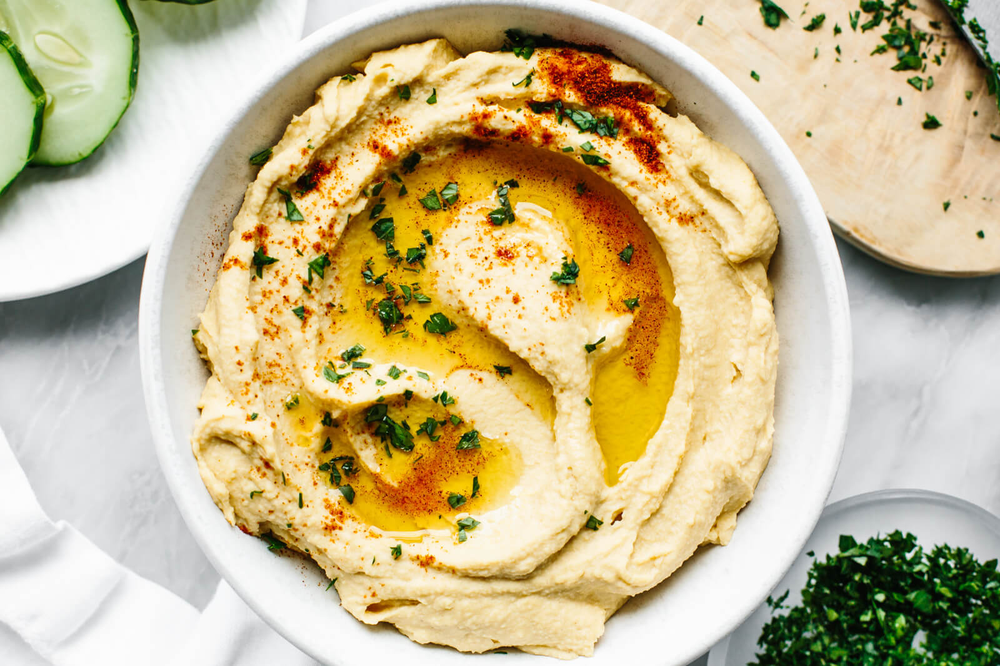

Hummus

Description
Want the dreamiest, smoothest hummus ever?
With a few simple tricks, you can make creamy, smooth homemade hummus, and yes, it’s better than store-bought.
Ingredients
- 1 Dose Kichererbsen
- Saft einer 1/2 Zitrone
- 3 Knoblauchzehen, grob geschnitten
- Etwas Olivenöl.
- 1 EL Tahin
- Salz und Pfeffer nach Geschmack
Steps
- Kichererbsen in ein Sieb leeren und abspülen
- Mit Kuchenmaschine zerkleinern.
- Zitronensaft, Olivenöl, Knoblauchzehen dazugeben.
- Durchmixen
- Wen es fest und bröckelig ist, dann noch etwas Olivenöl hinzufügen.
- Mit Salz und Pfeffer abschmecken.
Varianten
- Eine halbe Avokado dazugeben, dafür weniger Olivenöl
- Eine Handvollgekochte Edamames dazugeben.
- Ene halbe gekochte Rohne dazugeben.